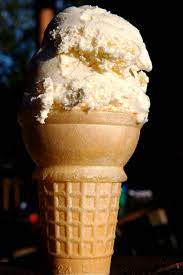

Chamomile Ice Cream

Description
This recipe is great for when you want the cozy comfort of a sweet chamomile tea, but it's too hot for hot drinks.
Ingredients
- 2c whole milk
- 2.5c heavy whipping cream
- 1c sugar (better yet, use honey)
- 6 - 8 chamomile tea bags
Steps
- Bring whole milk to a light simmer in a sauce pan.
- Add the sugar (or honey) and chamomile tea bags, cover, and let steep over night while the milk cools.
- Remove the tea bags and add heavy whipping cream. Blend just enough so it is evenly dispersed.
- Follow ice cream maker's instructions to turn the delicious liquid into ice cream consistency.